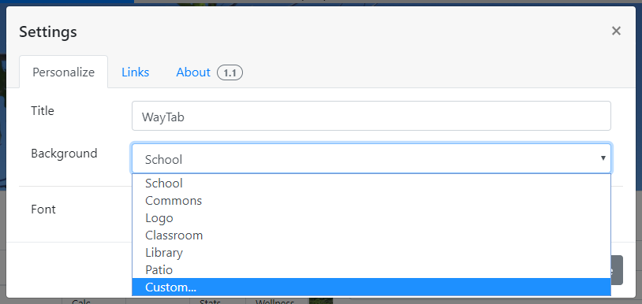
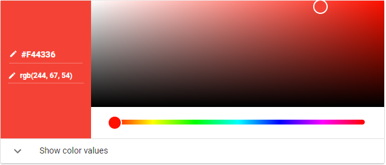

WayTab 1.1 added support for custom backgrounds, allowing for an image url, rgb (or rgba) color, or hex color.
How to activate the Custom Background feature
Activating the feature is easy:
- Open Settings (upper right corner)
- Click on the Background dropdown menu
- Select "Custom..."

Selecting the "Custom..." option in WayTab
Setting your custom background
Using an image
WayTab supports URLs to images hosted elsewhere on the web.
- Find an image on the web
- Copy and paste its URL in the "Custom Background" box

A sample background image. Supports GIFs. See here for supported image formats.
Using RGB and RGBA colors
RGB and RGBA colors use an 8-bit-per-color format to specify red, green, and blue values for a solid color. RGBA also supports a fourth alpha channel, which is out of 1.
- You can use Google's color picker to find a color to use.
- RGB and RGBA colors must be wrapped by either
rgb()orrgba(), respectively. - A sample RGB color might be
rgb(244, 67, 54), which is red (see image on right) - A sample RGBa color might be
rgba(244, 67, 54, 0.75), which is the same shade of red, but with 75% opacity

Google's color picker, showing Red 500.
Using HEX colors
HEX colors provide an alternate way of displaying solid colors, using base-16 pairs.
- HEX component pairs are expressed between 00 and FF, since the distance between 0 and F is 16, and 16^2 is 256
- In other words,
#FF0000is the same asrgb(255, 0, 0) - HEX values with same-letter pairs can be shortened. i.e.
#FF2200can be shortened to#F20 - You can use Google's color picker to find a color to use.
- Google's Material Design spec includes some great color palettes.